-
Naruto Clássico
"Naruto" é uma série de anime e mangá japonesa criada por Masashi Kishimoto. A história se passa em um mundo fictício onde ninjas são parte integrante das várias nações. O enredo segue Naruto Uzumaki, um jovem ninja que busca reconhecimento e sonha em se tornar o Hokage, o líder de sua vila, a Vila da Folha. Naruto é órfão e tem uma criatura poderosa, a Raposa de Nove Caudas, selada dentro dele desde o dia de seu nascimento, o que o torna marginalizado por outros moradores da vila.
Ao longo da série, Naruto embarca em várias missões com seus colegas ninjas Sasuke Uchiha e Sakura Haruno, liderados pelo sensei Kakashi Hatake. O enredo explora temas de amizade, coragem, determinação e sacrifício. À medida que a história avança, Naruto e seus amigos enfrentam inúmeros desafios, incluindo poderosos inimigos, e aprendem importantes lições sobre lealdade e superaçã.
Além da jornada de Naruto para se tornar o Hokage, a série também aborda a história de outros personagens, revelando segredos do passado e conexões complexas entre diferentes personagens. "Naruto" é conhecido por sua narrativa envolvente, personagens bem desenvolvidos e batalhas épicas, tornando-se um dos animes mais populares e duradouros de todos os tempos. A série original de "Naruto" foi seguida por uma sequência chamada "Naruto: Shippuden", que continua a história do personagem principal e seus amigos em suas aventuras e desafios. -
Naruto Shippuden
Em "Naruto: Shippuden", a história se desenrola após uma pausa de dois anos no enredo original. Nessa continuação, Naruto retorna à Vila da Folha após um treinamento intensivo com Jiraiya, um dos lendários Sannin, para se tornar um ninja mais forte. Ele reencontra seus amigos, incluindo Sakura Haruno e Sasuke Uchiha, mas também descobre que Sasuke abandonou a vila para buscar poder e vingança contra seu irmão, Itachi Uchiha, que estava envolvido em eventos traumáticos do passado de Sasuke. A trama de "Naruto: Shippuden" foca em Naruto e seus amigos tentando trazer Sasuke de volta para a vila e, ao mesmo tempo, enfrentando ameaças maiores. O enredo explora temas mais maduros, como sacrifício, redenção, amor e amizade, enquanto os personagens principais enfrentam desafios cada vez mais complexos e poderosos inimigos. Além da busca por Sasuke, Naruto descobre segredos sobre seu próprio passado, incluindo detalhes sobre a Raposa de Nove Caudas selada dentro dele e a verdade sobre seus pais. Durante a série, Naruto também se envolve em uma guerra global contra a organização criminosa Akatsuki, composta por poderosos ninjas com objetivos perigosos. A série culmina em batalhas épicas, revelações emocionantes e o crescimento notável de Naruto como ninja e como pessoa. "Naruto: Shippuden" é elogiado por suas reviravoltas emocionantes, personagens profundamente desenvolvidos e sequências de ação empolgantes, tornando-se uma continuação muito apreciada pelos fãs do anime e do mangá original.
Personagens Principais
| 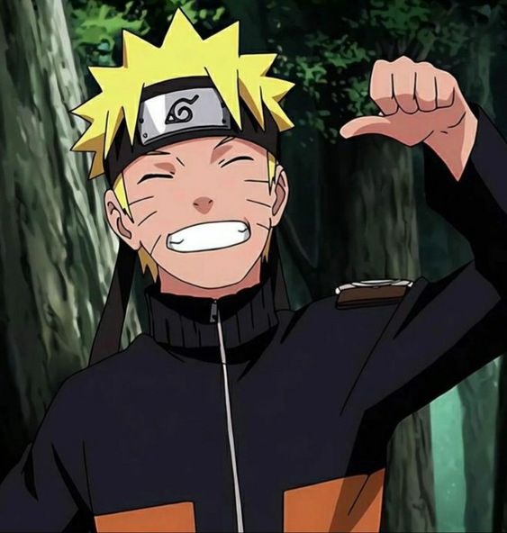 | Naruto Uzumaki é um shinobi de Konoha do clã Uzumaki e protagonista homônimo da franquia Naruto. Desde seu nascimento, ele se tornou jinchuuriki das Nove-Caudas, um destino que o levou a ser condenado e negligenciado por toda a aldeia durante sua infância. Depois de entrar para o Time 7, ao lado de Sakura Haruno, Sasuke Uchiha e sob comando de Kakashi Hatake, Naruto trabalhou duro para ganhar o respeito e o reconhecimento da aldeia, com o sonho de se tornar Hokage. Nos anos seguintes, Naruto passa a ser um ninja reconhecido pela aldeia, que é eventualmente considerado como um herói pelas pessoas, e mais tarde, pelo mundo shinobi em geral, renomado como o Herói da Vila da Folha . |
| 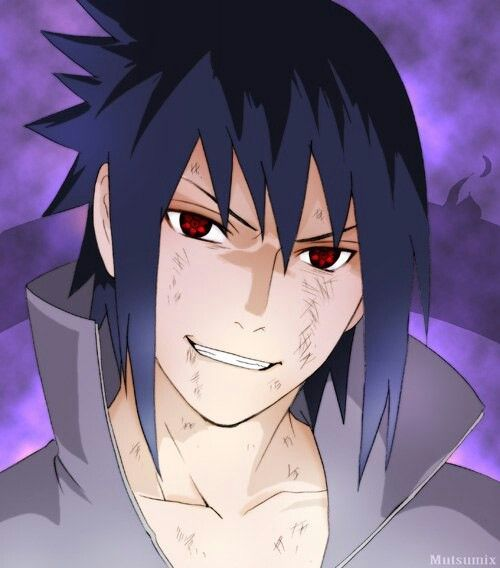 | Sasuke Uchiha é um dos últimos membros sobreviventes do clã Uchiha de Konoha, além de ser a reencarnação atual de Indra. Ele se tornou um shinobi para que pudesse algum dia ficar forte o suficiente para se vingar contra o seu irmão mais velho, Itachi, que tinha massacrado todo o seu clã. Inicialmente, um membro do Time Kakashi de Konoha, Sasuke desertou da aldeia para obter poder com Orochimaru, e mais tarde também se juntou a Akatsuki, tornando-se um criminoso internacional no processo. Mais tarde, ele se torna uma peça fundamental para acabar com a Quarta Guerra Mundial Ninja, até ser finalmente redimido por seu rival, e também melhor amigo, Naruto Uzumaki. Sasuke decide voltar para Konoha, dedicando a sua vida para ajudar a proteger a vila e seus habitantes. |
| 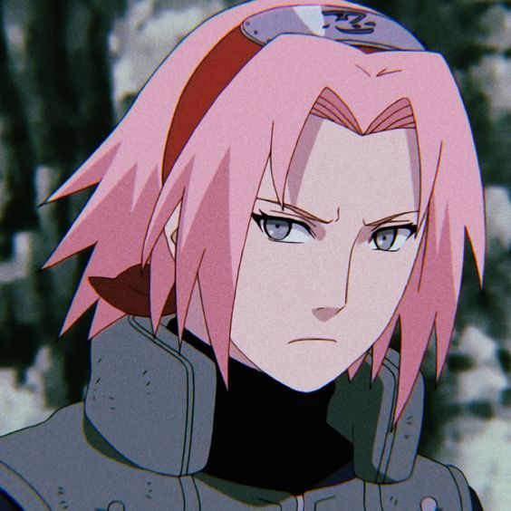 | Sakura Uchiha é uma kunoichi de nível jounin do clã Uchiha, por se casar com Sasuke Uchiha, de Konoha. Ela é designada como um membro do Time Kakashi, mas rapidamente encontra-se mal preparada para os deveres de um ninja e as complicações das vidas de seus companheiros de equipe. Treinando sob a tutela de sua mestra, Tsunade, ela se torna uma kunoichi mais forte e uma excelente ninja médica, sendo capaz de enfrentar os desafios de uma vida como um ninja, bem como ajudar e proteger seus amigos e entes queridos quando eles precisarem dela. Anos após a Quarta Guerra Shinobi, ela forma sua própria família com Sasuke Uchiha. |
| 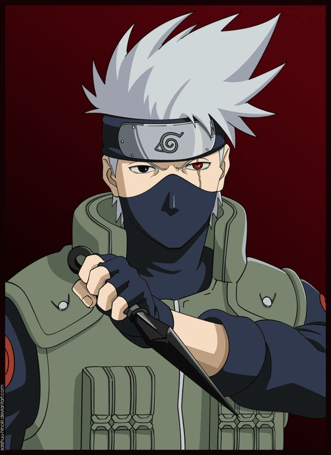 | Kakashi Hatake é um shinobi de Konoha. Ele recebeu um Sharingan de seu ex-companheiro de equipe, Obito Uchiha, quando era mais jovem, fazendo-o ser conhecido como Kakashi o Ninja Copiador e Kakashi do Sharingan . Seu prodigioso talento, habilidades e destreza com o Sharingan fizeram dele um dos mais capazes ninjas da aldeia, sendo reconhecido em todo o mundo ninja. Ele acaba sendo nomeado como líder do Time Kakashi, onde ele usa seus anos de experiência para treinar seus alunos para se tornarem ninjas habilidosos de suas próprias maneiras. Logo um tempo após a Quarta Guerra Mundial Shinobi, Kakashi ocupa o cargo público como o Sexto Hokage antes de eventualmente se aposentar e passá-lo ao seu pupilo Naruto Uzumaki. |
| 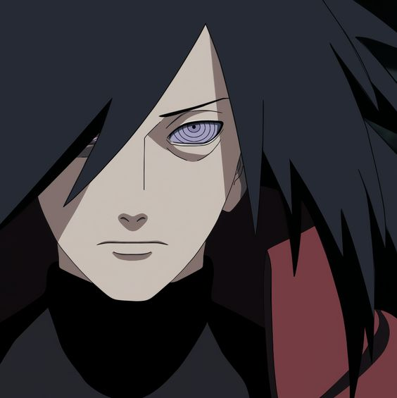 | Madara Uchiha foi o lendário líder do clã Uchiha durante a Era dos Estados Combatentes e um dos principais antagonistas da série. Ele fundou Konoha ao lado de seu rival, Hashirama Senju, com a intenção de iniciar uma era de paz. Eventualmente, quando os dois não concordaram quanto ao meio para alcançar a paz, eles lutaram pelo controle da aldeia em um combate histórico, que terminou com a morte de Madara. Contudo, Madara burlou sua própria morte e se escondeu, estendendo sua própria vida para trabalhar em seus planos para acabar com os conflitos mundiais. Incapaz de conclui-los em vida, Madara confiou seu conhecimento e planos a Obito Uchiha, pouco antes de morrer. Anos mais tarde, Madara foi reanimado e depois devidamente ressuscitado durante a Quarta Guerra Mundial Ninja. No entanto, os planos de Madara são definitivamente frustrados pelos esforços das Forças Aliadas Shinobi, e à beira de seus últimos momentos, ele percebe os erros de seu caminho e ateia as pazes com Hashirama antes de sua verdadeira e definitiva morte. |
| 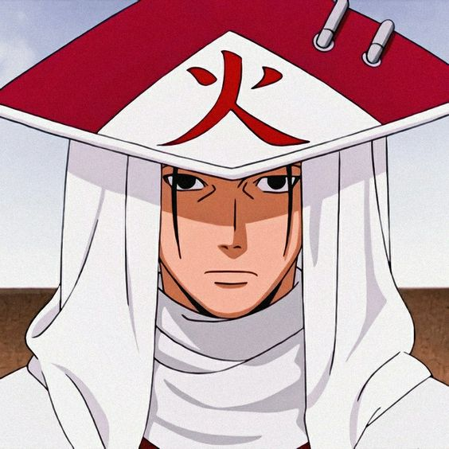 | Hashirama Senju foi o Primeiro Hokage de Konohagakure. Ele era famoso durante sua vida como o Deus Shinobi por seu incomparável talento ninja. Apesar disso, Hashirama só queria a paz, e para esse fim ele fundou Konoha com seu amigo de infância e rival Madara Uchiha. Embora ele não tenha sido capaz de alcançar a paz durante a sua vida, seu legado continuou a viver, moldando a aldeia há décadas após sua morte. |
| 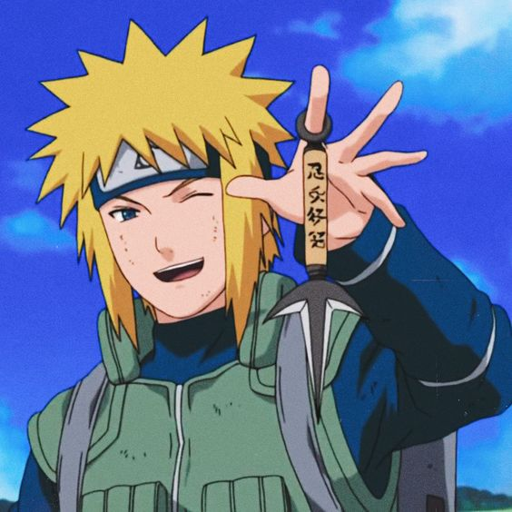 | Minato Namikaze , conhecido como Relâmpago Amarelo de Konoha , foi um shinobi lendário que se tornou o Quarto Hokage de Konoha. Morreu sacrificando sua vida durante o Ataque do Nove-Caudas em Konoha para selar metade do demônio em seu filho, morrendo heroicamente no processo. |
| 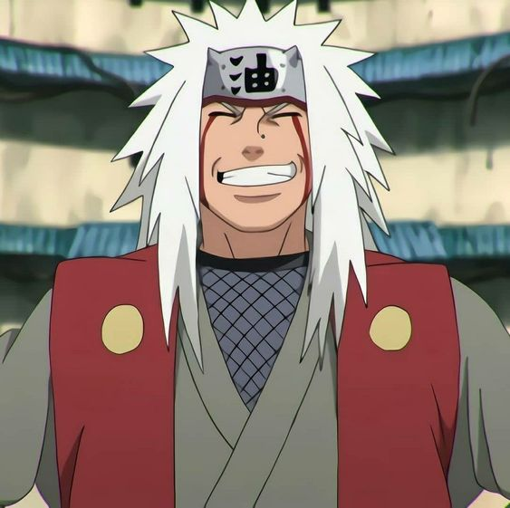 | Jiraiya foi um dos Sannin Lendários, junto com Tsunade e Orochimaru, treinados por Hiruzen Sarutobi. Ele era um auto-proclamado super-pervertido, e o escritor da popular série de livros de ficção para adultos, chamado Icha Icha. Ele também era conhecido como o Eremita dos Sapos, por causa da sua assinatura de invocação de sapos, e por seu status como Eremita. |
| 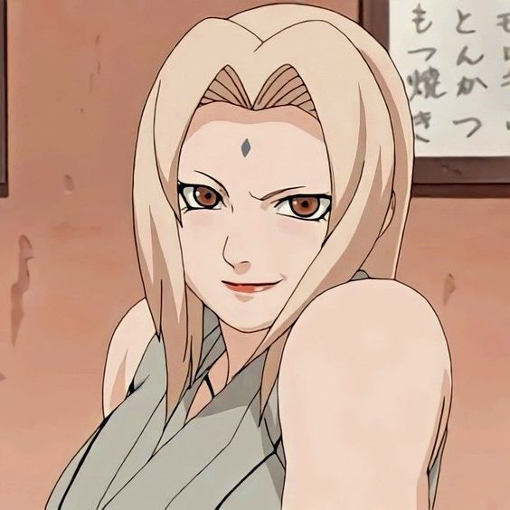 | Tsunade é uma dos Sannin Lendários de Konoha. Embora seja considerada a kunoichi mais forte do mundo e a maior ninja médica,Tsunade abandonou a vida de shinobi por muitos anos em busca de outros objetivos. Ela acaba sendo convencida a voltar para Konoha e se torna a Quinta Hokage, onde ela usa sua força para reprimir os inimigos da vila e seu conhecimento médico para manter os moradores a salvo. Eventualmente, ela renuncia de seu cargo e passa sua posição para Kakashi Hatake. |
| 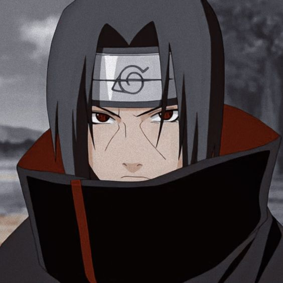 | Itachi Uchiha foi um prodígio do clã Uchiha de Konoha. Ele se tornou um criminoso internacional depois de assassinar seu clã inteiro, poupando apenas a vida de seu irmão mais novo, Sasuke. Ele se juntou a organização criminosa Akatsuki, onde ele entrou em frequentes conflitos com Konoha e seus ninjas, incluindo Sasuke, que procurou vingar sua família. Depois de morrer durante uma batalha contra Sasuke, as motivações de Itachi foram reveladas serem mais complicadas do que pareciam, uma vez que seu clã tramava um golpe de estado contra Konoha que traria guerra à aldeia. No fim, Itachi desejava proteger a sua vila e seu irmão, permanecendo um shinobi leal a Konoha até o fim. |
| 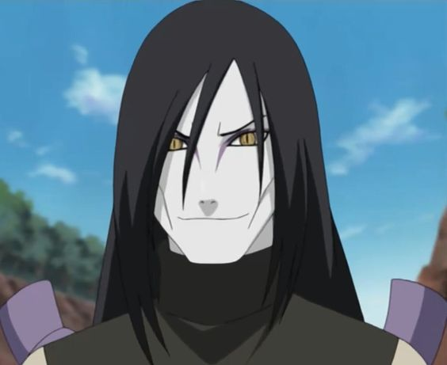 | Orochimaru é um dos Lendários Sannin, junto com Tsunade e Jiraiya, de Konoha. Com sua ambição de vida sendo aprender todos os segredos do mundo, Orochimaru buscou a imortalidade para que ele pudesse viver todas as vidas necessárias para realizar sua tarefa. Depois de ser pego em flagrante realizando experimentos antiéticos sobre seus concidadãos por causa desta imortalidade, Orochimaru desertou de Konoha, passando a ser perseguido por suas ambições, e por muitos anos procurou a destruição da aldeia, a fim de se vingar e demonstrar o que ele tinha aprendido. Após vivenciar várias mortes durante a busca de seus objetivos, Orochimaru percebe que sua abordagem é falha ao ver as ações de Kabuto Yakushi, e começa a monitorar as escolhas e ações de seu ex-associado, Sasuke Uchiha. |
Clãs Principais
| 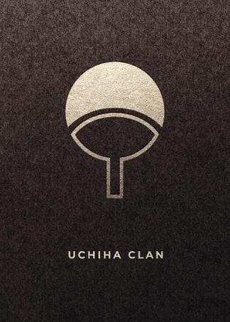 | O clã Uchiha foi um dos vários clãs excepcionais de Konoha, e também tinha fama de ser o clã mais poderoso da vila, produzindo shinobi que foram excepcionalmente talentosos e orientados para batalha. Juntamente com o clã Senju, eles fundaram Konoha, mas agora está quase extinto após os eventos do massacre do clã. Ele foi liderado por Tajima Uchiha, Madara Uchiha e Fugaku Uchiha. |
 |
O clã Hyuuga é uma "família nobre" e um dos vários clãs excepcionais de Konoha. Todos os membros nascidos neste clã possuem o Byakugan, uma kekkei genkai que lhes dá campos estendidos de visão e a capacidade de ver através de objetos sólidos e até mesmo ver o chakra da rede do chakra e, entre outras coisas, expelir chakra de qualquer um dos tenketsu em seu corpo. Hiashi Hyuuga é líder desse clã. |
| 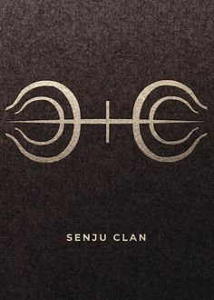 | O Clã Senju foi um dos clãs responsáveis pela fundação de Konohagakure, sendo o outro o seu rival, o clã Uchiha. Embora o clã em si pareça ter deixado de existir como um grupo, os Senju continuam influenciando a política de Konoha através de sua filosofia da Vontade do Fogo e da interpretação correspondente do papel da posição de Hokage. |
 |
O Clã Uzumaki foi um clã de destaque em Vila do Redemoinho. Desde sua dissolução, a maioria de seus membros conhecidos se refugiaram em Konoha e, quinze anos após a Quarta Guerra Mundial Ninja, o clã está novamente ativo como Família Uzumaki . |
| 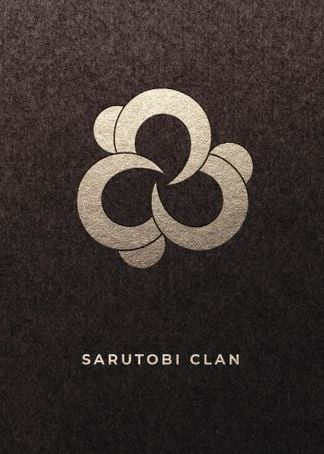 | O clã Sarutobi é um clã influente de Konoha. Ele tem produzido vários membros notáveis que ocuparam posições de grande autoridade, incluindo o Terceiro Hokage, cujo filho foi membro dos Doze Guardiões Ninja, e seu outro filho servia diretamente ao Hokage, junto de sua esposa, pela Anbu. Todos os membros conhecidos também têm sido observados devotos da Vontade do Fogo. |
| 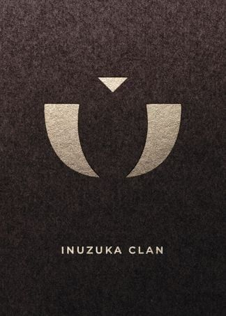 | O Clã Inuzuka ou Casa dos Inuzuka é uma família de shinobi de Konoha conhecida pelo uso de Cães Ninja como companheiros de combate e são facilmente identificados pelas distintas marcas vermelhas de presas em suas bochechas. |
| 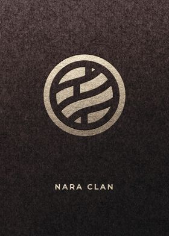 | O clã Nara ou Casa dos Nara, é um clã conhecido por sua manipulação de sombras e, por cuidar de veados que, pastam em uma grande área da floresta do clã. Shikaku Nara foi o chefe antes de passar para Shikamaru Nara, enquanto é esperado que Shikadai Nara herde essa posição. |
| 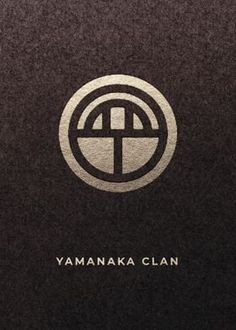 | O clã Yamanaka é uma família de ninjas de Konoha. Eles são especializados em técnicas relacionadas com a mente, e que possuem e administram uma loja de flores na aldeia. Inoichi Yamanaka costumava liderar o clã, mas era esperado que sua filha, Ino Yamanaka, se tornasse sua sucessora |
| 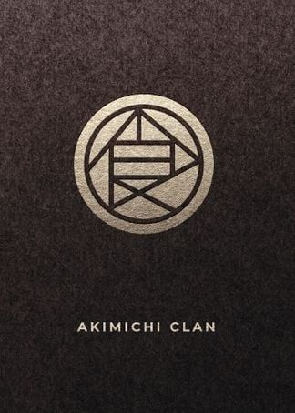 | O clã Akimichi é um dos vários clãs excepcionais de Konoha. As técnicas assinaturas do clã giram entorno da manipulação de sua reserva de gordura corporal através do uso do Estilo Yang. Até o momento, a família possuiu quinze chefes, com Chōza Akimichi sendo o décimo quinto. Chōji Akimichi é esperado tornar-se o décimo sexto chefe da família. |
| 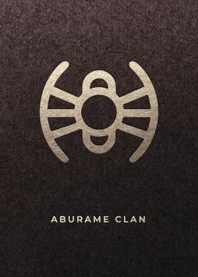 | O clã Aburame é um dos vários clãs excepcionais de Konoha, e são caracterizadas pelo uso de insetos como armas. Ao nascer, os membros deste clã são oferecidos como ninho a uma raça especial de insetos, como kikaichū (Inseto Parasita), que residirão sob a pele de seu hospedeiro. Esses Midiasvivem em simbiose com seu hospedeiro. Shibi Aburame foi líder deste clã. |
Curiosidades
Curiosidades sobre Naruto que você talvez não saiba:
Origem do nome Naruto
O nome Naruto vem de um rolinho de peixe servido com ramen, o prato favorito do personagem. Uzumaki significa “espiral” ou “redemoinho”, símbolo da vila natal da mãe de Naruto, Kushina Uzumaki.
Naruto é dublado por mulheres
Tanto na versão japonesa quanto na brasileira, Naruto e outros personagens são dublados por mulheres. No Japão, Junko Takeuchi, também dubladora de personagens de One Piece e Digimon, empresta a voz a Naruto. Já no Brasil, a dublagem é feita por Úrsula Bezerra.
Naruto era pra ser um mangá de culinária
Inicialmente, Naruto seria um mangá sobre culinária, não sobre ninjas. A ideia original de Masashi Kishimoto era que Naruto fosse um aprendiz de cozinheiro trabalhando em equipe em um restaurante de ramen.
Primeiro mangá a ganhar o Quill Awards
Naruto foi o primeiro mangá a conquistar o prêmio de "Melhor Graphic Novel" pela Quill Awards, em 2006. Esta instituição premia as melhores publicações de ficção da literatura mundial.